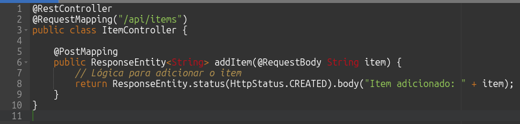
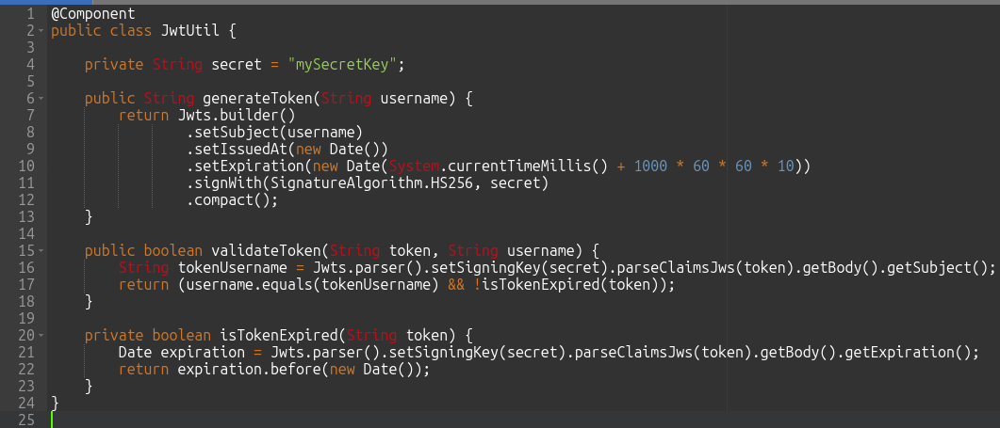

Endpoint com Framework Spring Boot utilizando linguagem Java.
Criando Endpoints GET e POST em Java com OpenAPI e Autenticação via Token

Desenvolvedor Java Sênior na Develcode
18 de agosto de 2024
1. Introdução
Neste artigo, vamos aprender a criar endpoints GET e em uma aplicação Java utilizando Spring Boot e OpenAPI. Além disso, vamos configurar a autenticação via token JWT para proteger nossos endpoints.
2. Configuração do Projeto
Primeiro, vamos configurar nosso projeto Spring Boot *[vide rodapé]. No pom.xml, adicione as seguintes dependências:

Importando as dependências das bibliotecas necessárias para o Spring Boot.
3. Criando o Endpoint GET
Vamos criar um endpoint GET que retorna uma lista de itens. Primeiro, crie um controlador:

Classe Java para a criação do endpoint GET
4. Criando o Endpoint POST
Agora, vamos criar um endpoint POST que adiciona um novo item:

Classe Java para a criação do endpoint POST
5. Configurando a Autenticação via Token JWT
Para proteger nossos endpoints, vamos configurar a autenticação via token JWT. Primeiro, crie uma classe para gerar e validar tokens JWT:

Classe Java para a criação do Token de autenticação.
6. Configurando o Spring Security
Agora, configure o Spring Security para usar o JWT:
Classe Java para o controle de acesso ao endpoint.
7. Documentando com OpenAPI
Finalmente, vamos documentar nossos endpoints com OpenAPI. Adicione as anotações no controlador:

Classe Java com os endpoint GET e POST.
8. Conclusão
Neste artigo, aprendemos a criar endpoints GET e POST em Java utilizando Spring Boot e OpenAPI, além de configurar a autenticação via token JWT para proteger nossos endpoints. Com essas ferramentas, podemos criar APIs seguras e bem documentadas.
Nota:
- Spring Boot é um framework baseado no Spring que simplifica o desenvolvimento de aplicações Java, eliminando a necessidade de configurações extensas. Ele oferece uma abordagem opinativa para a configuração, permitindo que os desenvolvedores criem rapidamente aplicações robustas e prontas para produção com configurações padrão sensatas. Com recursos como inicializadores automáticos, servidores embutidos e uma vasta gama de bibliotecas integradas, o Spring Boot facilita a criação de micros serviços e aplicações web escaláveis e de alta performance.